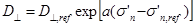
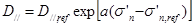
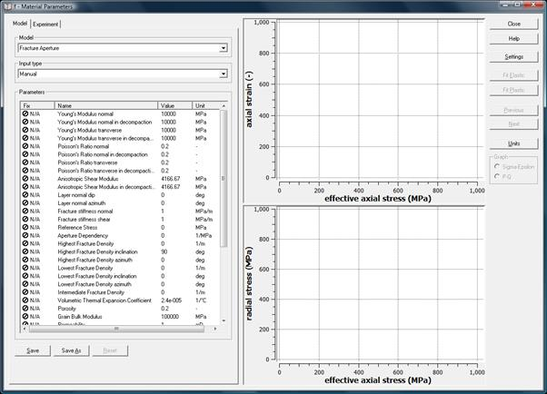
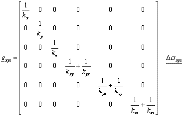
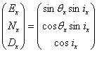
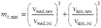
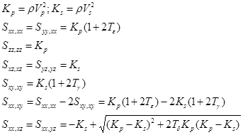

Fracture (Aperture) Anisotropy
Special anisotropic material model combines a transverse anisotropic material model with anisotropy by fracture weaknesses. One can be used without the other.
Fracture density
Fractures are planes of weakness that influence the matrix stiffness in specific directions only. The additional “strain absorption capacity”, both in normal and shear capacity is only acting in specific directions, the effect of which also dependent on the fracture density. By applying zero densities in all directions, the feature is disabled and the user can use transverse isotropy only.
The strain reference strain absorbing capacity in normal and shear direction need to be provided as well as the reference stress build up (or build down) per metre of movement. The reference normal stiffness D^ (in MPa/m of psi/ft) and the shear stiffness D// (in MPa/m of psi/ft) can be chosen differently.
The fracture stiffness (in normal and shear direction) can be chosen to depend on effective normal stress on the fracture, becoming very soft at tensile stresses and very stiff at high normal stresses. The “aperture dependency” a, (with unit 1/MPa or 1/psi) determines the non-linearity of the system, which is a function of fracture size, fracture distribution and intact rock properties. It needs be determined in situ or (for microcracks like coal cleats) in the laboratory.


The fracture stiffness gets evaluated at the beginning of every loadstep. It is not iterated for, so stress changes during the step are not taken into account. For high values of “a” or big stress steps near the tensile regime this can lead to unrealistic tensile stresses hence a more or less permanent low fracture stiffness in subsequent steps.

Fracture densities can differ in all directions, which is impossible to capture is an anisotropic model. It is hence assumed the fracture densities can be grouped in three principal directions of highest, lowest and intermediate fracture density, with orthogonal directions x, y and z respectively.
If one assumes that the average fracture stiffness would be “D^” (in MPa/m or psi/ft), and that the fracture density in direction x would be dx (in 1/m or 1/ft) the strain absorption capacity would be kx = D^/dx (in MPa or psi). A similar formulation holds for the y and z direction. Fractures might also contribute to shear deformation. The shear stiffness in y direction resulting from fractures in x direction would be kxy = D///dx (in MPa or psi). The full shear strain is also dependent by the fractures in y direction the move in x-direction: kxy = D///dy. A similar formulation holds for the shear combinations yz-zy and xz-zx.
The resulting compliance matrix is:

Geomec requires the input of the specific directions that encounter the highest and lowest fracture densities, defined as inclination and azimuth. The input follows the wells convention. When the highest fracture density is encountered in the direction (Easting, Northing, Depth)=(1,0,1), then the inclination is 45 degrees and the azimuth 90 degrees. This is then the x-direction. In reverse mode, the direction is defined as:

Geomec also reads in the direction of lowest fracture density. Geomec will however project this direction on the plane normal to the highest fracture density (x), to obtain the y-direction, so that an orthogonal system is maintained. The direction of the intermediate fracture density (z) is orthogonal to the highest and lowest densities and follows directly from the angles provided for the x- and y-direction, hence needs not be provided.
The direction input is designed to receive detailed pointset information from the software package SVS. SVS outputs a file in Gocad 3D pointset format with fracture densities in three directions (that depend on the user supplied scanning length of each point). The direction angles as provided for the intermediate fracture densities will be ignored by Geomec. The pointset values will be grouped into a tensor like group, so that the user only needs to drag and drop one pointset-item to material section under the Formations.
Geomec will rotate this compliance matrix to the Global directions Northing, Easting, Depth (N,E,D) and add the contribution from the bulk material, which can also be an anisotropic material.
Fracture Aperture and permeability multipliers
The (direction dependent) fracture aperture “v” is used to compute permeability multipliers. The permeability within the fracture planes is dependent on the third power of the aperture. When the initial aperture is known, the aperture change can be computed by integrating stress over the aperture stiffness D^. The permeability multiplier mk for the two direction orthogonal to principal fracture density direction is the third power of the new over initial fracture aperture. For the direction of highest fracture density (encountered while drilling) holds:

Transverse isotropic materials
Geomec allows the input of transverse isotropic material parameters, which can be combined with fracture anisotropy or used in upscaled anistropy. A transverse anisotropic material is frequently observed in nature and usually is the upscaled effect of fine lamination (bedding) resulting from the early marine material deposition. The stiffness parameters in normal direction (En, nn) to the lamination differ from the in-plane or transverse (Et, nt) stiffness parameters. The normal Poisson’s ratio is the portion (ratio) of absorbed normal strain that gets transferred to orthogonal (transverse) directions. The compliance matrix can be written as follows:

The Shear Modulus G does not follow directly from the Young’s moduli and Poisson’s ratios. It can be derived from upscaling routines, where upscaled layer thicknesses are part of the equation. Its value ranges from close to zero (high Poisson’s ratios and high Young’s moduli contrast) to En/[2(1+nn)] with Poisson’s ratios of zero.
The user needs to define the dip and azimuth of the bedding plane. The dip is the deviation from horizontal of the bedding plane in degrees. A dip of 90 degrees would mean a vertical plane. The azimuth of the dip is defined here as the rotation (clockwise from Northing) of the direction of steepest descent, the direction where a ball would roll on a flat service. These definitions align with the PETREL definitions.
In case of overturned formations, where the bottom is up, the user can select or import a dip greater than 90 degrees. A 10 degrees dip with azimuth 90 degrees coincides numerically with a 170 (=180-10) degrees dip and a –90 (or 270 = 90+180) degrees azimuth.
The user might import a pointset with dip and azimuths to perform a proper matrix rotation. Be aware that another definition exists in geological literature, where the azimuth is defined as the iso-depth or strike direction, which is 90 degrees rotated from the dip-azimuth
The relation between the dip (dn) and azimuth (qn) of a layer and its normal vector, is given by:

Note the difference in minus sign for the Depth coordinate, with the fracture densities, which arises from conventions on the direction of the positive vertical.
Thomsen Parameters
For Transverse Isotropy, the user may choose to use Thomsen Parameters instead of Young’s Moduli/Poisson’s ratios. Thomsen parameter are different way of expressing the anisotropy from seismic data. Instead of using 2 Young’s Moduli, 2 Poisson’s Ratios and 1 Shear Modulus, Vp, Vs and three ratio’s (Te, Tg, Td) determine the parameters.
The symmetric stiffness matrix S for z=normal direction (with sxy=Sxy,yz eyz) is shaped by

The stiffness matrix then gets inverted to a Compliance Matrix, which is used to derive the Young’s Moduli (Et, En), Poisson’s Ratio’s (nt, nn) and Shear Modulus (G) used by Geomec/Diana